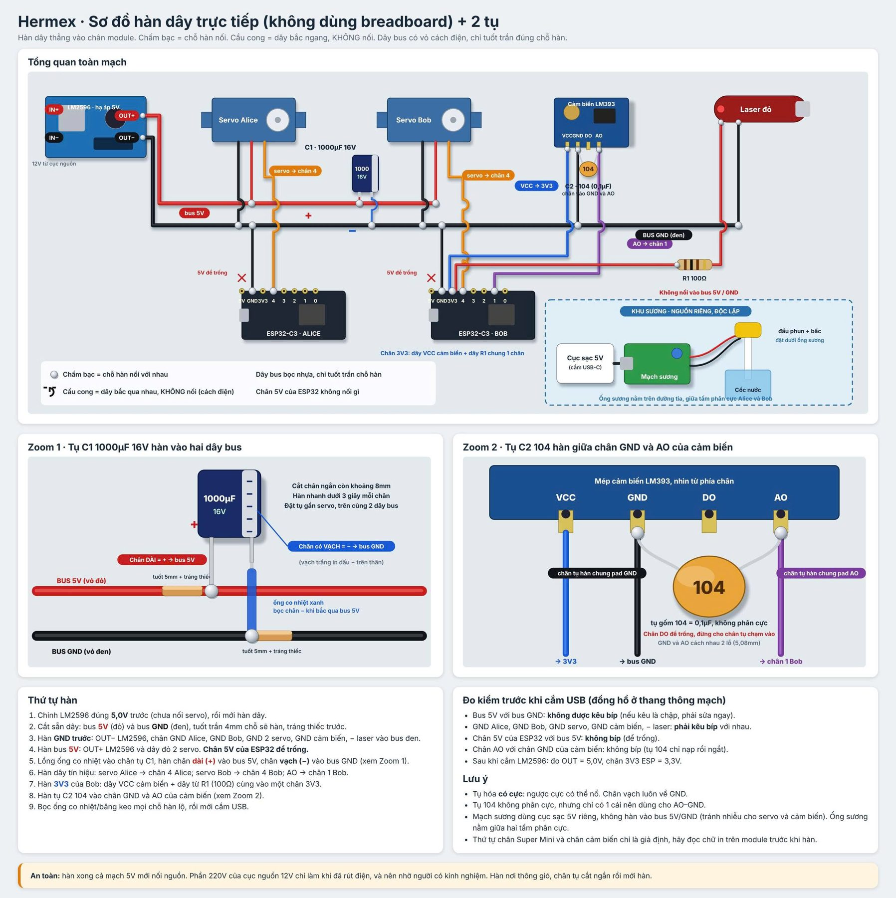

Vì sao khoá mật mã hiện nay có thể bị đe doạ, mục tiêu của sa bàn, các ràng buộc linh kiện và những gì mô hình không tuyên bố.
2. Cơ sở lý thuyết
Chồng chất, đo lường, định lý không nhân bản, bốn góc phân cực và định luật Malus.
3. Thiết kế và giao thức
Kiến trúc hai trạm, sáu bước BB84 từ sinh bit ngẫu nhiên đến lọc khoá, và cách tính QBER.
4. Chế tạo và thử nghiệm
Nguyên mẫu, sơ đồ đấu nối, dữ liệu đo thật từ ba điều kiện và phân tích thống kê.
5. Kết quả và ứng dụng
QBER khi có và không có kẻ nghe lén, dùng khoá vừa tạo để mã hoá một tấm ảnh.
6. Đóng góp và hướng phát triển
Nhóm tự làm gì, tác động giáo dục, các giới hạn đã thấy và cải tiến tiếp theo.
Câu hỏi xuyên suốt: một sa bàn chi phí thấp có thể tái hiện đúng logic của BB84
đến mức nào, và giới hạn của nó nằm ở đâu?
Vấn đề thực tiễn & nhu cầu
Khoá mật mã hôm nay có thể bị giải mã vào ngày mai
Các thuật toán như RSA dựa vào việc phân tích thừa số nguyên tố lớn, một bài toán khó với máy tính
thông thường. Máy tính lượng tử, thông qua thuật toán Shor, có khả năng phá vỡ giả định đó trong tương lai.
Rủi ro: khoá trao đổi qua kênh cổ điển (Diffie-Hellman, RSA) có thể bị thu thập ngay bây
giờ rồi giải mã sau, khi máy tính lượng tử đủ mạnh xuất hiện.
Hướng giải quyết: phân phối khoá lượng tử (QKD) không dựa vào độ khó toán học mà dựa vào
định luật vật lý: mọi phép đo trộm đều để lại dấu vết.
Nhu cầu cụ thể: thiết bị QKD thương mại cần nguồn photon đơn lẻ và bộ dò chuyên dụng, rất
khó đưa vào lớp học. Người học cần một mô hình nhìn thấy và chạm vào được.
Giao thức BB84 (Bennett & Brassard, 1984) là giao thức QKD đầu tiên và được nghiên cứu
nhiều nhất, phù hợp để tái hiện bằng linh kiện phổ thông.
Mục tiêu & tiêu chí của giải pháp
Một sa bàn quan sát được và đo kiểm được
Vấn đề cần giải quyết
Chế tạo mô hình cơ – điện chi phí thấp, tái hiện đúng logic toán học của BB84, để người xem thấy một bit
được mã hoá thành góc quay, bị đo, được lọc và cuối cùng bảo vệ một dữ liệu thật.
Người dùng hướng tới: học sinh, giáo viên và người lần đầu tiếp cận QKD.
Phạm vi: mô phỏng logic của BB84 bằng ánh sáng và cơ khí; không tuyên bố bảo mật lượng tử thực sự.
Tiêu chí mà giải pháp phải đạt
Mã hoá bit bằng bốn góc 0°, 45°, 90°, 135° trên linh kiện phổ thông.
Hai trạm Alice và Bob độc lập, chỉ nối nhau bằng kênh quang và mạng công khai.
Phần mềm tự động sifting và tính QBER, huỷ khoá khi QBER vượt 11%.
Khoá sau kiểm tra mã hoá và giải mã được một ảnh thật, khớp tuyệt đối với ảnh gốc.
Mọi số liệu thử nghiệm được ghi lại để người khác kiểm chứng.
Câu hỏi kỹ thuật chính: tín hiệu LDR đọc được từ hai servo có đủ
ổn định để phân biệt góc trùng với góc vuông hay không, và nếu chưa thì giới hạn nằm ở đâu?
Ràng buộc kỹ thuật
Bốn giới hạn của linh kiện định hình thiết kế
0 – 4095
ADC 12 bit của ESP32-C3
Giá trị LDR thô, dao động theo ánh sáng nền của căn phòng.
4 góc
Servo MG996 quay 180°
Firmware chỉ chấp nhận 0°, 45°, 90°, 135°; sai số cơ khí không thể bỏ qua.
≈ 5 mẫu/s
Tốc độ đo
Mỗi mẫu cách nhau khoảng 0,2 giây; sau khi đổi góc phải chờ servo ổn định.
Laser + LDR
Không có photon đơn lẻ
LDR quang dẫn có đáp ứng phi tuyến, thay cho bộ dò photon đơn.
Vì các ràng buộc này, Hermex tái hiện đúng logic của
BB84 chứ không tuyên bố bảo mật lượng tử thực sự. Phần kẻ nghe lén (Eve) được kiểm chứng bằng mô phỏng phần mềm,
phần cứng được kiểm chứng ở khả năng phân biệt góc.
Các phương án đã xem xét
Ba hướng tiếp cận, một phương án được chọn
Phương án
Độ trung thực vật lý
Chi phí và khả năng chế tạo
Khả năng quan sát
Quyết định
A. Photon đơn lẻ thật (nguồn đơn photon, bộ dò SPAD)
Rất cao
Rất cao, cần thiết bị chuyên dụng
Thấp: không nhìn thấy
Loại, vượt khả năng thực hiện
B. Mô phỏng phần mềm thuần tuý
Thấp: không có kênh vật lý
Rất thấp
Trung bình
Giữ làm công cụ bổ trợ: trang mô phỏng và bộ kiểm thử
C. Mô hình cơ – điện: servo mã hoá góc, laser, LDR đọc lại
Trung bình: đúng logic, ánh sáng thật
Thấp, linh kiện phổ thông
Cao: góc quay nhìn thấy được
Chọn làm nguyên mẫu chính
Tiêu chí lựa chọn: chế tạo được với linh kiện sẵn có, quan sát được
bằng mắt, và có thể ghi lại dữ liệu để kiểm chứng. Phương án C đáp ứng cả ba, phương án B bù cho phần C chưa
làm được là thử nghiệm kẻ nghe lén.
Phạm vi của mô hình
Mô phỏng logic của BB84, không phải QKD đơn photon
Nội dung
QKD thật
Hermex
Nguồn sáng
Đơn photon hoặc xung rất yếu
Laser đỏ cường độ lớn
Bộ thu
Bộ dò photon đơn
LDR trên module LM393
Cơ sở bảo mật
Định lý không nhân bản: đo thì làm đổi trạng thái
Chỉ có trong mô phỏng phần mềm
Phần Hermex làm được
Chọn basis và bit ngẫu nhiên, mã hoá thành góc phân cực, đo bằng định luật Malus, lọc khoá, tính QBER, mã hoá ảnh bằng khoá thu được
Với ánh sáng cường độ lớn, kẻ nghe lén có thể tách một phần ánh sáng mà không làm đổi trạng thái phần còn lại,
nên mô hình không bảo mật theo nghĩa lượng tử. Giá trị của Hermex là giáo dục: biến giao thức BB84 thành một hệ thống nhìn thấy,
đo được và chạy lại được trong lớp học.
Cơ sở lý thuyết — 1 / 4
Chồng chất lượng tử (superposition)
Một photon phân cực không tồn tại ở một hướng cố định cho tới khi bị đo. Trạng thái phân cực ban đầu là một chồng chập đồng thời của các trạng thái khả dĩ, được mô tả bằng biên độ xác suất xác định.
Trước thời điểm đo
Photon tồn tại đồng thời ở cả hai trạng thái khả dĩ. Không một thiết bị nào có thể xác định trước hướng phân cực mà không can thiệp vào hệ thống.
Khi thực hiện phép đo
Hệ thống bị sụp đổ (wavefunction collapse) về một trạng thái phân cực duy nhất tương ứng với góc của kính lọc đo lường.
Bản chất lượng tử: câu hỏi "photon đang phân cực theo hướng nào" chỉ có câu trả lời xác định sau khi phép đo thực tế diễn ra.
Cơ sở lý thuyết — 2 / 4
Đo lường làm sụp đổ trạng thái
Khi đo một photon bằng một kính lọc phân cực (basis), trạng thái superposition sụp đổ (collapse)
về một trong hai kết quả khả dĩ của basis đó.
Đo đúng basis: kết quả luôn khớp với giá trị Alice đã gửi.
Đo sai basis (ví dụ Alice dùng basis ngang/dọc nhưng Bob đo bằng basis chéo): kết quả
collapse về một trong hai giá trị với xác suất 50/50, hoàn toàn độc lập với giá trị Alice đã chuẩn bị ban đầu.
Đây chính là cơ sở vật lý cho bước sifting: chỉ những lần basis trùng nhau mới cho kết quả
đáng tin cậy.
Cơ sở lý thuyết — 3 / 4
Định lý không nhân bản (No-Cloning)
Nền tảng bảo mật của QKD bắt nguồn từ định lý No-Cloning (Wootters & Zurek, 1982): không một quy luật vật lý nào cho phép sao chép hoàn hảo một trạng thái lượng tử chưa biết trước mà không phá huỷ bản gốc.
Truyền tin cổ điển (Classical)
Kẻ nghe lén (Eve) dễ dàng sao chép luồng bit 0/1 trên dây dẫn hoặc sóng vô tuyến mà không làm suy chuyển bản tin gốc. Người nhận hoàn toàn không thể phát hiện.
Kênh lượng tử (Quantum)
Eve không thể "nhân bản" photon để giữ lại 1 bản rồi gửi tiếp 1 bản. Muốn biết thông tin, Eve buộc phải đo trực tiếp — và phép đo này sẽ làm thay đổi trạng thái photon tới Bob.
Hệ quả cốt lõi: Trong thế giới lượng tử, kẻ nghe lén không thể tàng hình — mọi nỗ lực trộm thông tin đều tự động để lại dấu vết sai số QBER.
Cơ sở lý thuyết — 4 / 4
Bốn góc, bốn trạng thái phân cực
Trong BB84 nguyên bản, hai basis được dùng là basis ngang/dọc (0°/90°) và basis chéo (45°/135°) —
bốn hướng phân cực cụ thể mà một nguồn sáng phân cực tuyến tính có thể tạo ra.
0°
basis ngang/dọc — bit 0
45°
basis chéo — bit 0
90°
basis ngang/dọc — bit 1
135°
basis chéo — bit 1
Đây chính là lý do Hermex chọn đúng bốn góc servo 0°/45°/90°/135°:
không phải con số tuỳ ý, mà là ánh xạ trực tiếp từ bốn trạng thái phân cực mà giao thức BB84 gốc sử dụng.
Sơ đồ kỹ thuật — tổng thể dự án
Từ một định luật vật lý đến một tấm ảnh được bảo vệ
Bốn mảnh ghép của Hermex nối liền theo một trục duy nhất — từ
nguyên lý vật lý tới một tấm ảnh được bảo vệ.
Nguyên lý vật lý: định luật Malus & định lý không nhân bản.
Phần cứng: ESP32 + servo + LDR ở hai trạm Alice/Bob.
Phần mềm: sifting, tính QBER, mã hoá/giải mã XOR.
Kết quả: phân biệt kênh sạch, nhiễu và bị nghe lén.
BB84 thậtHermex tái hiện
Photon đơn lẻChùm laser thông
thường
Hướng phân cực photonGóc quay servo
(0°/45°/90°/135°)
Kính lọc phân cực của BobServo thứ hai quay
tới góc đo, LDR đọc cường độ
Đo đúng basis → thu đúng bitServo & LDR
cùng góc → đọc đúng giá trị đã gửi
Đo sai basis → ngẫu nhiên (định lý không nhân bản)Phần mềm chủ động sinh số ngẫu nhiên khi basis không khớp
Sơ đồ kỹ thuật 1 / 5
Nguyên lý quang học & định luật Malus
Hình do nhóm tự vẽ.
Đây là công thức duy nhất giải thích được tại sao góc lệch quyết định cường
độ ánh sáng còn lại, chứ không phải quy luật kiểu "bật/tắt" — góc lệch càng lớn, ánh sáng lọt qua càng giảm dần
liên tục theo hàm cos², không phải nhảy đột ngột từ 100% xuống 0%.
Sơ đồ kỹ thuật 2 / 5
Ánh sáng phân cực theo một hướng nhất định
Trong BB84 nguyên bản, mỗi bit được mã hoá bằng hướng phân cực của một photon đơn lẻ. Một kính
lọc phân cực chỉ cho ánh sáng cùng hướng đi qua trọn vẹn — lệch hướng càng nhiều, ánh sáng lọt qua càng ít,
theo định luật Malus: cường độ truyền qua tỉ lệ với cos²(Δθ) của góc lệch giữa hai kính lọc.
KÍNH PHÁT (0°)
KÍNH ĐO CỦA BOB
Cường độ truyền qua ≈ 100%
cos²(0°) = 1.00
Hai kính cùng hướng — ánh sáng truyền qua gần như trọn vẹn,
tương ứng lúc Bob đo đúng basis Alice đã dùng.
Sơ đồ kỹ thuật 3 / 5
Đồ thị Malus và giới hạn cảm biến LDR
Hình do nhóm tự vẽ, minh hoạ lý thuyết (không phải số đo).
R = A · E−γ
Đặc tính phi tuyến của LDR quang dẫn (A: hằng số vật liệu · γ ≈ 0.6 – 0.9)
Hệ quả: không thể dùng một ngưỡng ADC cố định
Mức sáng 50% tại 45° không tương đương 50% giá trị ADC, vì LDR phi tuyến và mức nền thay đổi theo từng căn phòng. Nhóm hiệu chuẩn ngưỡng ngay trước mỗi lần chạy: trung bình ánh sáng nền cộng 300 điểm ADC. Những vòng basis lệch nhau cho kết quả không đáng tin và bị loại ở bước sifting.
Sơ đồ kỹ thuật 4 / 5
Ba kịch bản thiết kế: bình thường, hacker, sương mù
Hình do nhóm tự vẽ. Kịch bản hacker được kiểm chứng bằng mô phỏng phần mềm; sa bàn đã có module phun sương cho kịch bản sương mù nhưng chưa có số liệu đo riêng.
Hệ thống có hai lớp kiểm tra độc lập: cường độ tín hiệu (bắt lỗi thời tiết,
chạy trước) và QBER (bắt hành vi tấn công, chỉ chạy khi tín hiệu đủ mạnh). Eve không thể vừa đo trộm vừa giữ
nguyên góc phân cực — nên dù cường độ không đổi, QBER vẫn tố cáo được sự can thiệp.
Sơ đồ kỹ thuật 5 / 5
Kiến trúc hệ thống: hai trạm, ba kênh
Hình do nhóm tự vẽ.
Ba đường nối mang ba vai trò khác nhau: Serial USB chỉ nội bộ từng trạm, TCP/IP mang dữ liệu
số công khai giữa hai máy tính, còn kênh quang học là ánh sáng thật — không mang giao thức số
nào, không thể bị "hack" theo nghĩa mạng máy tính thông thường.
1
BƯỚC 01 / 06 Giao thức BB84
Alice sinh ngẫu nhiên bit và basis
Với mỗi vòng truyền, Alice tự sinh độc lập một bit (0 hoặc 1) và một basis (ký hiệu "+" hoặc "×")
— hoàn toàn ngẫu nhiên, không phụ thuộc vào bất kỳ vòng nào trước đó hay bất kỳ điều gì phía Bob.
Yêu cầu bắt buộc: chuỗi ngẫu nhiên phải thật (không dùng seed cố định) và
phân bố đều gần 50/50. Nếu bit hoặc basis có quy luật dự đoán được, kẻ tấn công có thể khai thác để đoán trước
một phần khoá mà không cần đo trực tiếp.
2
BƯỚC 02 / 06 Giao thức BB84
Servo mã hoá cặp (basis, bit) thành một góc quay
Cặp giá trị (basis, bit) vừa sinh được ánh xạ sang đúng một trong bốn góc servo cố định — đây là
bước duy nhất biến một bit trừu tượng thành một hành động cơ khí quan sát được bằng mắt thường.
0°
basis + , bit 0
90°
basis + , bit 1
45°
basis × , bit 0
135°
basis × , bit 1
3
BƯỚC 03 / 06 Giao thức BB84
Ánh sáng truyền qua kênh quang tự do
Sau khi kính phân cực của Alice quay tới đúng góc, tia laser đi qua kính đó, băng qua khoảng không
(hoặc ống mica trong sa bàn thật), tới kính phân cực của Bob ở phía đối diện.
Độ chính xác cơ khí quyết định trực tiếp độ tin cậy phép đo: lệch góc lắp đặt chỉ 0.1° cũng
có thể khiến điểm sáng lệch cả chục centimet ở khoảng cách xa — đây là lý do bệ laser trong sa bàn thật cần cơ
cấu vi chỉnh 3 ốc thay vì gắn cố định.
4
BƯỚC 04 / 06 Giao thức BB84
Bob tự đo bằng basis của riêng mình
Trước khi ánh sáng tới, Bob đã tự sinh sẵn một basis ngẫu nhiên của riêng mình — hoàn toàn độc lập
với basis Alice đã dùng. Kính phân cực của Bob quay tới góc tương ứng, rồi LDR đọc cường độ ánh sáng còn lại để
suy ra bit.
Basis trùng nhau: theo định luật Malus, cường độ ánh sáng đạt giá trị lớn nhất — Bob đọc
được chính xác đúng bit Alice đã gửi.
Basis lệch nhau: kết quả đo rơi vào vùng không đáng tin cậy, tương đương một lần tung đồng
xu 50/50.
5
BƯỚC 05 / 06 Giao thức BB84
So sánh basis công khai — lọc khoá (sifting)
Qua kênh mạng TCP/IP, Alice và Bob công khai gửi cho nhau danh sách basis đã dùng ở mỗi vòng —
không bao giờ gửi giá trị bit, vì bit mới là thứ cần giữ bí mật.
Cả hai chỉ giữ lại đúng những vòng mà basis trùng nhau — theo lý thuyết xác suất, basis được
chọn độc lập ngẫu nhiên nên tỷ lệ trùng khớp trung bình xấp xỉ 50%. Đây chính là hàm sift_keys() trong module qkd_logic.py.
Mô phỏng trực tiếp
Chạy thử một phiên trao đổi khoá
Mỗi vòng: Alice chọn ngẫu nhiên 1 bit và 1 basis, servo xoay đúng góc tương ứng, tín hiệu đi qua
kênh quang, Bob đo bằng basis ngẫu nhiên của riêng mình. Chỉ những vòng mà hai bên tình cờ trùng basis mới
được giữ lại làm khoá.
1. Sinh bit + basis
2. Servo mã hoá góc
3. Truyền qua kênh quang
4. Bob đo bằng LDR
5. So sánh basis (sifting)
6. Tính QBER
TRẠM ALICE—
Sẵn sàng
EVE ⏺
TRẠM BOB—
Sẵn sàng
#
Alice
Bob
Basis
Kết quả
Khoá đã sift
—
QBER (ngưỡng an toàn 11%)
—
Chưa đủ dữ liệu — chạy vài vòng để ước lượng QBER.
Để minh hoạ dễ hiểu, trang này so sánh toàn bộ khoá đã sift để tính QBER. Trong triển khai
thật, chỉ một phần nhỏ được công khai so sánh rồi bỏ đi — phần còn lại mới thật sự dùng làm khoá mã hoá ảnh.
Vì sao sai số lại tố cáo kẻ nghe lén
QBER: tỷ lệ lỗi bit lượng tử
QBER là tỷ lệ bit sai trong số các bit đã giữ lại sau sifting. Tấn công chặn-đo-gửi lại
(intercept–resend) buộc Eve đoán basis — đúng 50% số lần — nên mỗi lần đoán sai, có 50% khả năng bit bị đảo
khi tới Bob. Gộp lại, việc nghe lén toàn bộ đường truyền tạo ra QBER kỳ vọng khoảng 25%, vượt xa ngưỡng an
toàn 11% mà hệ thống đặt ra.
QBER ≈ 0.25 × (tỷ lệ photon bị Eve chặn đọc)
Kéo thanh trượt để xem Eve chặn đọc một phần đường truyền — thay vì toàn bộ — sẽ
ảnh hưởng QBER thế nào. Đây là phép tính lý thuyết, tách biệt với vòng lặp ngẫu nhiên ở mục Mô phỏng phía
trên.
0% bị chặn → QBER lý thuyết 0.0%, an toàn.
6
BƯỚC 06 / 06 Giao thức BB84
Tính QBER — quyết định giữ hay huỷ khoá
Một phần khoá đã sift được trích ra để công khai so sánh giữa hai bên, tính tỷ lệ lỗi bit lượng tử
(QBER). Phần đã công khai so sánh bị loại bỏ vĩnh viễn — chỉ phần còn lại mới trở thành khoá bí mật cuối cùng.
QBER ≤ 11%: Kênh an toàn
Kênh được xác nhận an toàn, khoá lượng tử còn lại được
dùng để mã hoá ảnh XOR và gửi đi.
QBER > 11%: Phát hiện nghe lén
Nghi ngờ có sự can thiệp hoặc nghe lén từ Eve, toàn bộ phiên bị huỷ tức thì — không có dữ
liệu nào được gửi đi.
Chế tạo nguyên mẫu
Hai trạm, mỗi trạm một ESP32-C3 và một servo
Trạm Alice (gửi)
ESP32-C3 Super Mini, servo MG996 ở GPIO4
Nhận lệnh góc qua Serial, quay servo rồi trả lại xác nhận
Chỉ chấp nhận bốn góc hợp lệ 0°, 45°, 90°, 135°
Trạm Bob (nhận)
ESP32-C3 Super Mini, servo MG996 ở GPIO4 mang kính phân tích
Cảm biến ánh sáng LDR trên module LM393, đọc đầu ra AO ở GPIO1
Quay xong chờ 200 ms cho ổn định rồi mới đọc ADC và trả giá trị
Giao thức Serial (tốc độ 115200)
gửi "<góc>" → nhận "OK:<góc>" hoặc "LDR:<giá trị>"
Chọn chân không trùng chân strapping
GPIO4 và GPIO1 (tránh GPIO2, 8, 9)
Nguồn
12 V → LM2596 hạ 5 V cho servo; ESP32 lấy nguồn qua USB
Lọc nhiễu
tụ 1000 µF ở nguồn servo; tụ 104 giữa GND và AO
Kỹ thuật lắp ráp
hàn dây trực tiếp lên module, không dùng breadboard
Hoàn thành lắp ráp mạch
23/11/2026
Thông số lấy từ mã nguồn firmware và sơ đồ đấu nối của nhóm.
Sơ đồ đấu nối
Hàn dây trực tiếp, chia nguồn và lọc nhiễu

Hình do nhóm tự vẽ. Bấm vào hình để phóng to.
Ảnh nguyên mẫu Hermex
Kết quả hiệu chuẩn ngưỡng LDR
Quy trình thử nghiệm & nhật ký
Sáu bộ dữ liệu, ba điều kiện, ghi lại tự động
Script hermex_hw_experiment.py thử đủ 16 cặp góc (4 góc Alice × 4 góc Bob), mỗi cặp đo 20 lần, chờ
0,4 s sau mỗi lần đổi góc. Mỗi bộ lưu ba tệp: dữ liệu thô, bảng tổng hợp so với cos² lý thuyết, và thông tin
thí nghiệm kèm mã commit.
Bộ dữ liệu
Điều kiện
Nội dung đo
Số mẫu
Thời gian
nen
Tắt laser (đo nền)
16 cặp góc × 20 lần
320
66 s
lan1
Bật laser
16 cặp góc × 20 lần
320
66 s
lan2
Bật laser
16 cặp góc × 20 lần
320
68 s
troi, troi2, troi3
Bật laser, ba thời điểm trong buổi sáng
riêng cặp 0° / 0°, 150 lần
3 × 150
3 × 31 s
Toàn bộ đo ngày 24/11/2026, hai board ESP32 cắm vào cùng một máy tính.
Dữ liệu gốc và nhật ký lưu trong thư mục data của kho mã nguồn, xuất trình được khi giám khảo yêu cầu.
Kết quả phần cứng 1 / 2
Tín hiệu LDR thay đổi theo góc lệch, nhưng yếu
Đồ thị do nhóm tự tạo bằng Python từ dữ liệu đo ngày 24/11/2026. Δθ = 135° được gộp với 45° vì cos² đối xứng.
84%
Laser, lần 2 (lan2)
Phân biệt đúng góc trùng và góc vuông bằng một ngưỡng duy nhất.
59%
Laser, lần 1 (lan1)
Gần mức đoán ngẫu nhiên (50%).
66%
Nền, tắt laser
Cao hơn mức đoán ngẫu nhiên dù không có laser.
Kết quả phần cứng 2 / 2
Cùng một cặp góc, ba lần đo cho ba mức nhiễu
Đồ thị do nhóm tự tạo bằng Python từ ba bộ dữ liệu troi, troi2, troi3 (cặp 0° / 0°, 150 mẫu mỗi bộ).
Độ lệch chuẩn của ADC giảm từ 545 xuống 145 rồi 35 chỉ do đo vào ba thời điểm khác nhau, trong
khi vị trí hai servo không đổi. Nhiễu từ môi trường lớn hơn nhiều so với chênh lệch giữa các góc ở trang trước.
Báo cáo số liệu đo
Bảng ADC trung bình theo từng cặp góc
Nền, tắt laser
0°
45°
90°
135°
0°
982±71
1035±220
1204±604
1125±650
45°
773±20
769±9
967±314
950±148
90°
1003±38
860±106
757±31
800±42
135°
756±9
760±12
790±25
838±19
Laser, lần 1
0°
45°
90°
135°
0°
666±189
1393±100
1570±81
846±146
45°
1096±32
1189±97
868±178
1040±58
90°
888±84
853±72
954±104
1159±28
135°
1215±13
1252±13
1261±11
1179±199
Laser, lần 2
0°
45°
90°
135°
0°
516±22
516±9
562±17
535±54
45°
504±3
510±8
544±20
681±26
90°
1071±459
594±12
572±15
591±29
135°
598±8
609±12
600±7
592±7
Hàng là góc Alice, cột là góc Bob. Mỗi ô ghi trung bình ± độ lệch chuẩn của 20 lần đo (ADC). Ô viền xanh lá: hai góc trùng nhau. Ô viền đỏ: hai góc vuông nhau. Nền ô càng sáng thì ADC càng cao. Số liệu gốc: thư mục data, ngày 24/11/2026.
Nếu hệ hoạt động đúng như Malus, ô viền xanh lá phải thấp hơn ô viền đỏ trong cùng hàng. Lan2 đúng ở cả 4 hàng, nhưng hàng 135° chỉ chênh 17 điểm, nhỏ hơn nhiễu. Lan1 đúng ở 2 trong 4 hàng; bộ nền đúng ở 3 trong 4 hàng. Ô (90°, 0°) của lan2 có độ lệch chuẩn 459, là điểm nhiễu lớn nhất.
Phân tích thống kê
Góc vuông cho ADC cao hơn góc trùng, nhưng bộ nền cũng vậy
So sánh 80 mẫu ở góc trùng (Δθ = 0°) với 80 mẫu ở góc vuông (Δθ = 90°) trong mỗi bộ đo, bằng kiểm định Welch. Chênh lệch TB = ADC góc vuông trừ ADC góc trùng; KTC = khoảng tin cậy.
Bộ đo
Chênh lệch TB
KTC 95%
Cohen d
AUC
p (Welch)
Nền, tắt laser
143
63 đến 222
0,56
0,68
0,0006
Laser, lần 1
191
108 đến 273
0,72
0,64
< 0,0001
Laser, lần 2
183
115 đến 251
0,85
0,89
< 0,0001
Chênh lệch có ý nghĩa thống kê ở cả ba bộ, nhưng bộ nền (không laser) đã chênh 143 so với 183 đến 191 khi bật laser,
nên phần đóng góp riêng của laser còn nhỏ. Chỉ lan2 tách khá rõ (AUC 0,89). Các mẫu trong một bộ đo được thu liên tiếp,
không độc lập, nên giá trị p chỉ mang tính tham khảo; cần lặp nhiều bộ đo ở cùng điều kiện để kết luận.
Diễn giải kết quả & giới hạn
Đọc đúng số liệu: đã thấy gì, chưa kết luận được gì
Điều số liệu hỗ trợ
Ở cả hai lần bật laser, ADC tăng khi góc lệch tăng từ 0° lên 90°.
Khi hai servo cùng góc, bộ lan2 rất ổn định: độ lệch chuẩn khoảng 7 đến 22 điểm.
Hệ thống ghi nhận, lưu trữ và đối chiếu được với lý thuyết một cách có hệ thống.
Điều chưa thể kết luận
Bộ đo nền (tắt laser) cũng tăng theo góc, nên một phần xu hướng không đến từ laser.
Chưa đối chiếu chiều của đầu ra AO (module LM393) với tài liệu module: cần xác định sáng hơn thì ADC tăng hay giảm.
Chỉ có một nguyên mẫu và ba bộ đo 16 cặp, chưa đủ để kiểm định thống kê.
Hệ quả thiết kế: nhóm không dùng ngưỡng cố định mà hiệu chuẩn lại ngưỡng
mỗi lần chạy (trung bình ánh sáng nền cộng 300 điểm ADC), và coi cải thiện phép đo phần cứng là việc ưu tiên
tiếp theo.
Chạy BB84 trọn vẹn trên phần cứng thật
Thử nghiệm kẻ nghe lén (Eve) trên phần cứng
Kết quả mô phỏng phần mềm
QBER trong mô phỏng: kênh sạch và kênh có Eve
Kịch bản kiểm thử tích hợp test_pipeline.py chạy hoàn toàn bằng phần mềm, không dùng ESP32. Nó so sánh kênh sạch với kênh có Eve mô phỏng gây nhiễu khoảng 25% tại các vị trí basis trùng khớp.
Đồ thị do nhóm tự vẽ từ kết quả chạy test_pipeline.py (mô phỏng phần mềm, không phải dữ liệu phần cứng).
Phần mềm phân biệt rõ kênh sạch (QBER xấp xỉ 0%) với kênh có Eve (xấp xỉ 25–27%, sát giá trị lý thuyết 25%). Đây là kết quả mô phỏng; trên phần cứng tín hiệu LDR còn nhiễu nên chưa thể kết luận tương tự (xem phần Chế tạo & thử nghiệm).
Ứng dụng thực tế
Dùng khoá vừa tạo để mã hoá một tấm ảnh
Khoá bí mật sau bước sifting và kiểm tra QBER không chỉ nằm trên lý thuyết — Hermex dùng chính
chuỗi bit đó làm khoá cho phép mã hoá XOR, minh chứng trực quan rằng khoá lượng tử có thể bảo vệ dữ liệu thật.
XOR tự nghịch đảo: A ⊕ K ⊕ K = A — mã hoá và giải mã dùng chung một phép toán, chỉ cần đúng
khoá là khôi phục hoàn hảo.
Khoá lặp lại (key-stream): vì khoá QKD thường ngắn hơn nhiều so với dung lượng ảnh, chuỗi
khoá được lặp lại tuần hoàn cho đủ phủ kín toàn bộ điểm ảnh.
Ứng dụng thực tế
Ảnh gốc → mã hoá → giải mã
Ảnh gốc
→ XOR →
Giải mã bằng khoá bị lệch
Ở 0 bit sai, ảnh giải mã trùng khớp ảnh gốc tuyệt đối. Chỉ cần vài bit lệch, phần
lớn khối ảnh liên quan đã sai hẳn.
Chỉ cần lệch khoá vài bit, ảnh vỡ vụn gần như hoàn toàn
Đây chính là bằng chứng trực quan cho lý do khoá phải khớp tuyệt đối — không có khái niệm "gần đúng" trong
XOR, khác hẳn cách con người thường hình dung về "đoán gần trúng mật khẩu".
Kiến trúc thiết bị thật
Hai trạm độc lập, một giao thức chung
Mô phỏng ở trên chạy hoàn toàn trong trình duyệt. Thiết kế thiết bị thật gồm hai trạm, mỗi trạm một máy tính nối với một board ESP32 riêng, giao tiếp qua mạng LAN, dùng chung một codebase Python. Khi thử nghiệm phần cứng, cả hai board có thể cắm vào cùng một máy.
Trạm Alice (gửi)
Sinh chuỗi bit và basis ngẫu nhiên
Điều khiển servo qua ESP32 theo góc 0/45/90/135°
Thực hiện sifting, mã hoá ảnh gốc bằng XOR
Gửi dữ liệu qua TCP Socket
Trạm Bob (nhận)
Nhận dữ liệu qua TCP Socket
Đọc cảm biến LDR qua ESP32 của mình
Tính QBER, đối chiếu ngưỡng an toàn
Giải mã ảnh và hiển thị kết quả trên PyQt6
Baudrate Serial
115200
Cổng TCP
5050
Buffer nhận dữ liệu
4096 byte
Số bit khoá thô mỗi phiên
512 bit
Ngưỡng QBER an toàn
11%
Góc servo hợp lệ
0° / 45° / 90° / 135°
Kế thừa & đóng góp mới
Nhóm dùng lại gì, và tự phát triển gì
Phần kế thừa (có nguồn)
Giao thức BB84 (Bennett & Brassard, 1984) và ngưỡng lỗi khoảng 11% (Shor & Preskill, 2000).
Định luật Malus và định lý không nhân bản (Wootters & Zurek, 1982).
Thư viện có sẵn: PyQt6, OpenCV, NumPy, PySerial, ESP32Servo.
Linh kiện thương mại: ESP32-C3, servo MG996, LDR.
Phần nhóm phát triển
Ánh xạ (basis, bit) thành bốn góc servo và đọc lại bằng LDR trên hai trạm độc lập.
Hiệu chuẩn ngưỡng LDR theo ánh sáng căn phòng ngay trước khi chạy.
Pipeline sifting, QBER, mã hoá XOR ảnh và truyền qua TCP.
Quy trình thu dữ liệu có nhật ký, đối chiếu với cos² lý thuyết.
Trang web mô phỏng tương tác để giải thích dự án.
Tính mới nằm ở cách đặt vấn đề: dùng linh kiện phổ thông để làm
nhìn thấy được từng bước của BB84, và công bố trung thực giới hạn của phép đo thay vì chỉ trình
bày kết quả đẹp.
Tác động & khả năng ứng dụng
Từ một sa bàn lớp học đến nhận thức về an toàn thông tin
Giáo dục
Mô hình trực quan để dạy học sinh vì sao một phép đo trộm làm lộ kẻ nghe lén, kết nối vật lý phổ thông với
an toàn thông tin. Có thể dùng trong hoạt động trải nghiệm STEM.
Kỹ thuật
Cung cấp khung thu thập và đối chiếu dữ liệu cho các mô hình QKD giá rẻ, từ đó có thể thay LDR bằng
photodiode hoặc thay laser thường bằng nguồn điều chế.
Kinh tế
Toàn bộ dùng linh kiện phổ thông và phần mềm mã nguồn mở, nên chi phí thấp hơn rất nhiều so với thiết bị QKD
thương mại, phù hợp với trường học.
Xã hội
Góp phần nâng nhận thức về nguy cơ từ máy tính lượng tử. Năm 2024, NIST đã công bố các tiêu chuẩn mật mã hậu
lượng tử đầu tiên, cho thấy vấn đề này đã là việc thực tế.
Kết luận
Ba kết quả của Hermex
Nguyên mẫu hoạt động: hai trạm ESP32 điều khiển servo bốn góc và đọc LDR qua Serial, kèm
pipeline sifting, QBER, mã hoá XOR ảnh qua TCP đã kiểm thử tích hợp.
Phần mềm: trong mô phỏng, QBER phân biệt kênh sạch (xấp xỉ 0%) với kênh có Eve (xấp xỉ
25–27%, sát lý thuyết 25%), vượt rõ ngưỡng 11%.
Phần cứng: sáu bộ đo ngày 24/11 cho thấy LDR có phản ứng theo góc nhưng còn nhiễu; một ngưỡng
duy nhất phân biệt đúng góc trùng và góc vuông ở mức 59–84% tuỳ lần đo.
Kết luận trung thực: mô hình đã chứng minh được logic BB84 ở tầng phần
mềm và đã xây dựng xong tầng phần cứng; việc làm phần cứng đủ tin cậy là bước kế tiếp.
Giới hạn & ý tưởng tiếp theo
Từ giới hạn đo được đến các cải tiến cụ thể
Giới hạn đã xác định
Ánh sáng môi trường làm độ lệch chuẩn thay đổi từ 35 đến 545 điểm ADC giữa ba lần đo.
Chưa có số liệu đo cho kẻ nghe lén trên phần cứng, mới có mô phỏng phần mềm.
Một nguyên mẫu, sáu bộ dữ liệu; chưa kiểm định thống kê.
Chiều biến thiên của đầu ra AO cần đối chiếu với tài liệu của module LM393.
Ý tưởng phát triển tiếp theo
Hộp che sáng và giá đỡ in 3D che dây, để giảm ánh sáng nền.
Điều chế laser theo tần số cố định và đọc đồng bộ, nhằm loại ánh sáng nền.
Thay LDR bằng photodiode để đáp ứng nhanh và tuyến tính hơn.
Lặp lại ít nhất 10 bộ đo và phân tích thống kê.
Thêm servo thứ ba đóng vai Eve chặn và gửi lại, đo QBER trên phần cứng.
Nhật ký nghiên cứu
Khai báo công nghệ số và AI
Lời kết
Cảm ơn hội đồng đã lắng nghe
Nhóm xin gửi lời cảm ơn chân thành tới hội đồng giám khảo,
giáo viên hướng dẫn, và nhà trường đã đồng hành cùng dự án Hermex trong suốt quá trình nghiên cứu và chế
tạo.
Q&A — Mời Hội đồng đặt câu hỏi & đóng góp ý kiến
Một góc quay, một bit an toàn
Biểu tượng xuyên suốt hành trình nghiên cứu của Hermex.
SLIDE 01 / 48
← → hoặc Space để chuyển slide | F11 toàn màn hình | G mục lục
Mục lục
Chọn một slide để nhảy tới. Nhấn G hoặc Esc để đóng.